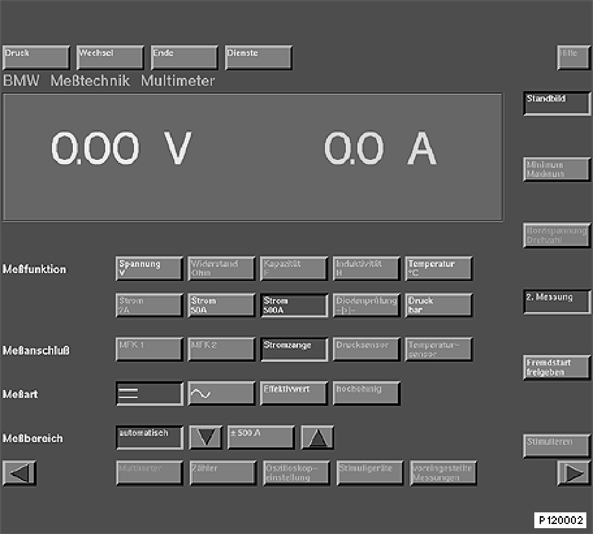

Help Text to Generator Test
Help Text to Generator Test
Proceed as described in the following to achieve the required setting in the metrology window:
- Change to measurement system
- Select 2. Measurement in the center right of the screen
- Select 1000 A current in the middle of the screen
After a short time the current value appears next to the voltage value.
The following display is set up:
